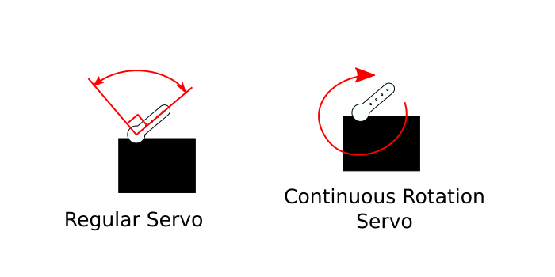

Sweep and Intro to Servo Motors
Intro
The official Arduino documentation is a more complete reference:

This lesson uses the Servo library. Make sure it is installed. If not, locate it in the library manager. (Don’t know how to install a library?)
To open the example, go to:
File > Examples > Servo > Sweep
The Servo Motor
Earlier we used a vibration motor, which is a simple DC motor with an unbalanced, eccentric weight attached to the shaft. A DC motor’s shaft turns when it is supplied a constant DC voltage (like from a 9V battery).
A servo motor is a specialized motor designed for precise control of rotary motion. There are two types of servo motors that I would like to point out:
- Positional (Standard Rotation): Control the angle, within a range of 180 degrees.
- Continuous Rotation: Control the speed and direction. It can keep turning a full 360 degrees.

Both types look exactly the same, and both are controlled
using a Pulse Width Modulation (PWM) signal.
The servo gets its power from a separate wire. The signal only
tells it what to do: on a positional servo, the width of each
pulse sets the angle. The Servo library sends these pulses for
you, so you don’t need analogWrite().
Check out Fade and Intro to PWM for a refresher on PWM.
Wiring
For this lesson, please collect the following:
- Arduino Nano 33 IoT and USB cable
- Servo motor
- Jumper wires
A servo has three wires:
- Brown or black wire → GND
- Red wire → Vin
- Orange, yellow or white wire → pin D9
The servo needs about 5V, and the Nano’s 3.3V pin isn’t enough. Vin gets 5V from the USB while the board is plugged in (see 5V vs 3.3V). Only connect the red wire to Vin, never to a numbered pin. Those pins only take 3.3V.
If the servo shakes or the Arduino restarts, the servo may be pulling more power than the USB can give. This is more likely with a heavy load or more than one servo. Power the servo from the breadboard power supply module set to 5V instead:
- Red wire → + rail
- Brown or black wire → – rail
- – rail → the Nano’s GND, so they share a ground
- Orange, yellow or white wire → pin D9, the same as before
Don’t connect the + rail to the Nano.
Minimal Example
#include <Servo.h>
Servo myservo; // create servo object to control a servo
void setup() {
myservo.attach(9); // attaches the servo on pin 9 to the servo object
}
void loop() {
myservo.write(180); // tell the servo to go to 180 degrees
}Breakdown
#include <Servo.h>To include the library, you have to write this statement.
#include is written followed by the name of the
file that has the code of the library. This Servo.h
file is the Servo library. It is surrounded by angle brackets.
More
about #include.
Servo myservo; // create servo object to control a servoFor this library, there is an object called Servo, and it is
given the variable name myservo.
The Arduino language is an Object-Oriented Programming language. An object is similar to a data type, except that it is a data structure. It is more of a defined thing with certain defined attributes. For example, an object called Human might have properties such as age, height, name, etc. and can perform actions like
human.walk(),human.sleep(),human.eat().In this Servo library, there is an object defined called Servo that has the properties of a servo motor, with actions like
attach()andwrite().
myservo.attach(9); // attaches the servo on pin 9 to the servo objectAs said in the comment, this line tells Arduino that this servo is connected to pin 9.
myservo.write(180); // tell the servo to go to 180 degreesThe write() method changes the position of the
servo and takes an angle between 0 and 180 degrees.
Play Around
Try changing the number in write() to see where
the servo moves.
The Full Sweep Example
#include <Servo.h>
Servo myservo; // create Servo object to control a servo
// twelve Servo objects can be created on most boards
int pos = 0; // variable to store the servo position
void setup() {
myservo.attach(9); // attaches the servo on pin 9 to the Servo object
}
void loop() {
for (pos = 0; pos <= 180; pos += 1) { // goes from 0 degrees to 180 degrees
// in steps of 1 degree
myservo.write(pos); // tell servo to go to position in variable 'pos'
delay(15); // waits 15 ms for the servo to reach the position
}
for (pos = 180; pos >= 0; pos -= 1) { // goes from 180 degrees to 0 degrees
myservo.write(pos); // tell servo to go to position in variable 'pos'
delay(15); // waits 15 ms for the servo to reach the position
}
}A variable is defined to store the angle position.
int pos = 0; // variable to store the servo positionFor Loops
The loop() function in this sketch is using two
for loops. The structure of a for loop is
this:
for (initialization; condition; increment) {
// statement(s);
}There are three things that need to be specified within the
parentheses ():
- initialization: You need to initialize a
variable with a starting value.
iis used often by convention. This is like a setup function, as it happens first and only happens once. - condition: Each time through the loop, a condition is tested. If it is true, then whatever is within the curly brackets is executed.
- increment: After each loop, the variable defined in the initialization is incremented by a certain amount.
So in our example:
for (pos = 0; pos <= 180; pos += 1) {
// the code executed if true
}pos = 0: Theposvariable starts with an initial value of 0.pos <= 180: The condition checks to see ifposis less than or equal to 180.pos += 1: If the condition is true, whatever is within the curly brackets is executed, andposis incremented by 1.
The loop repeats until the condition is false, which is when
pos reaches the value of 181. 181 is no longer less
than or equal to 180. We then exit the for loop and
continue.
The second for loop is the same, except pos is
given an initial value of 180, the condition checks to see if
pos is greater than or equal to 0,
and pos is decremented (decreased
by 1) each time.